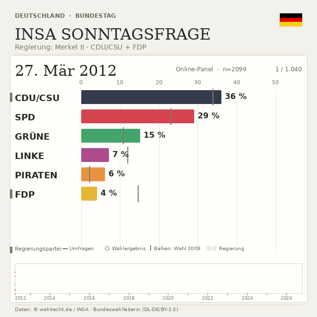

Deutschland · Bundestag
INSA race · one minute
Both exports show all 1,036 poll snapshots. Source and copyright credits remain visible throughout.
Animated GIF
3.6 MB
Portable looping image for posts that accept GIF uploads.
MP4 companion
0.9 MBThe same frames in a smaller video file for platforms that prefer video.
60 seconds · 640 × 640 · 1,036 frames · Data: © wahlrecht.de / INSA · Additional database: © dawum.de (ODbL)